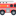

<!doctype html>
<html lang="en">
    <head>
        <meta charset="utf-8">
        <meta http-equiv="X-UA-Compatible" content="IE=edge">
        <meta name="viewport" content="initial-scale=1,user-scalable=no,maximum-scale=1,width=device-width">
        <meta name="mobile-web-app-capable" content="yes">
        <meta name="apple-mobile-web-app-capable" content="yes">
        <link rel="stylesheet" href="css/leaflet.css">
        <link rel="stylesheet" href="css/L.Control.Layers.Tree.css">
        <link rel="stylesheet" href="css/L.Control.Locate.min.css">
        <link rel="stylesheet" href="css/qgis2web.css">
        <link rel="stylesheet" href="css/fontawesome-all.min.css">
        <link rel="stylesheet" href="css/leaflet-control-geocoder.Geocoder.css">
        <link rel="stylesheet" href="css/leaflet-measure.css">
        <style>
        html, body, #map {
            width: 100%;
            height: 100%;
            padding: 0;
            margin: 0;
        }
        </style>
        <title>Emergency Services Map of Koshi Province</title>
    </head>
    <body>
        <div id="map">
        </div>
        <script src="js/qgis2web_expressions.js"></script>
        <script src="js/leaflet.js"></script>
        <script src="js/L.Control.Layers.Tree.min.js"></script>
        <script src="js/L.Control.Locate.min.js"></script>
        <script src="js/leaflet.rotatedMarker.js"></script>
        <script src="js/leaflet.pattern.js"></script>
        <script src="js/leaflet-hash.js"></script>
        <script src="js/Autolinker.min.js"></script>
        <script src="js/rbush.min.js"></script>
        <script src="js/labelgun.min.js"></script>
        <script src="js/labels.js"></script>
        <script src="js/leaflet-control-geocoder.Geocoder.js"></script>
        <script src="js/leaflet-measure.js"></script>
        <script src="data/KoshiProvince_1.js"></script>
        <script src="data/Hospital_2.js"></script>
        <script src="data/PoliceStation_3.js"></script>
        <script src="data/FireStation_4.js"></script>
        <script>
        var highlightLayer;
        function highlightFeature(e) {
            highlightLayer = e.target;

            if (e.target.feature.geometry.type === 'LineString' || e.target.feature.geometry.type === 'MultiLineString') {
              highlightLayer.setStyle({
                color: '#ffffff',
              });
            } else {
              highlightLayer.setStyle({
                fillColor: '#ffffff',
                fillOpacity: 1
              });
            }
            highlightLayer.openPopup();
        }
        var map = L.map('map', {
            zoomControl:true, maxZoom:28, minZoom:1
        }).fitBounds([[25.476894542308894,84.18048359600719],[28.48862382458894,89.47113176544606]]);
        var hash = new L.Hash(map);
        map.attributionControl.setPrefix('<a href="https://github.com/tomchadwin/qgis2web" target="_blank">qgis2web</a> &middot; <a href="https://leafletjs.com" title="A JS library for interactive maps">Leaflet</a> &middot; <a href="https://qgis.org">QGIS</a>');
        var autolinker = new Autolinker({truncate: {length: 30, location: 'smart'}});
        function removeEmptyRowsFromPopupContent(content, feature) {
         var tempDiv = document.createElement('div');
         tempDiv.innerHTML = content;
         var rows = tempDiv.querySelectorAll('tr');
         for (var i = 0; i < rows.length; i++) {
             var td = rows[i].querySelector('td.visible-with-data');
             var key = td ? td.id : '';
             if (td && td.classList.contains('visible-with-data') && feature.properties[key] == null) {
                 rows[i].parentNode.removeChild(rows[i]);
             }
         }
         return tempDiv.innerHTML;
        }
        document.querySelector(".leaflet-popup-pane").addEventListener("load", function(event) {
          var tagName = event.target.tagName,
            popup = map._popup;
          // Also check if flag is already set.
          if (tagName === "IMG" && popup && !popup._updated) {
            popup._updated = true; // Set flag to prevent looping.
            popup.update();
          }
        }, true);
        L.control.locate({locateOptions: {maxZoom: 19}}).addTo(map);
        var measureControl = new L.Control.Measure({
            position: 'topleft',
            primaryLengthUnit: 'meters',
            secondaryLengthUnit: 'kilometers',
            primaryAreaUnit: 'sqmeters',
            secondaryAreaUnit: 'hectares'
        });
        measureControl.addTo(map);
        document.getElementsByClassName('leaflet-control-measure-toggle')[0]
        .innerHTML = '';
        document.getElementsByClassName('leaflet-control-measure-toggle')[0]
        .className += ' fas fa-ruler';
        var bounds_group = new L.featureGroup([]);
        function setBounds() {
        }
        map.createPane('pane_OSMMap_0');
        map.getPane('pane_OSMMap_0').style.zIndex = 400;
        var layer_OSMMap_0 = L.tileLayer('http://tile.openstreetmap.org/{z}/{x}/{y}.png', {
            pane: 'pane_OSMMap_0',
            opacity: 1.0,
            attribution: '<a href="https://www.openstreetmap.org/copyright">© OpenStreetMap contributors, CC-BY-SA</a>',
            minZoom: 1,
            maxZoom: 28,
            minNativeZoom: 0,
            maxNativeZoom: 19
        });
        layer_OSMMap_0;
        map.addLayer(layer_OSMMap_0);
        function pop_KoshiProvince_1(feature, layer) {
            layer.on({
                mouseout: function(e) {
                    for (var i in e.target._eventParents) {
                        if (typeof e.target._eventParents[i].resetStyle === 'function') {
                            e.target._eventParents[i].resetStyle(e.target);
                        }
                    }
                    if (typeof layer.closePopup == 'function') {
                        layer.closePopup();
                    } else {
                        layer.eachLayer(function(feature){
                            feature.closePopup()
                        });
                    }
                },
                mouseover: highlightFeature,
            });
            var popupContent = '<table>\
                    <tr>\
                        <th scope="row">DISTRICT</th>\
                        <td>' + (feature.properties['DISTRICT'] !== null ? autolinker.link(feature.properties['DISTRICT'].toLocaleString()) : '') + '</td>\
                    </tr>\
                </table>';
            layer.bindPopup(popupContent, {maxHeight: 400});
            var popup = layer.getPopup();
            var content = popup.getContent();
            var updatedContent = removeEmptyRowsFromPopupContent(content, feature);
            popup.setContent(updatedContent);
        }

        function style_KoshiProvince_1_0() {
            return {
                pane: 'pane_KoshiProvince_1',
                opacity: 1,
                color: 'rgba(82,82,82,1.0)',
                dashArray: '',
                lineCap: 'butt',
                lineJoin: 'miter',
                weight: 1.0, 
                fill: true,
                fillOpacity: 1,
                fillColor: 'rgba(204,204,204,1.0)',
                interactive: true,
            }
        }
        map.createPane('pane_KoshiProvince_1');
        map.getPane('pane_KoshiProvince_1').style.zIndex = 401;
        map.getPane('pane_KoshiProvince_1').style['mix-blend-mode'] = 'normal';
        var layer_KoshiProvince_1 = new L.geoJson(json_KoshiProvince_1, {
            attribution: '',
            interactive: true,
            dataVar: 'json_KoshiProvince_1',
            layerName: 'layer_KoshiProvince_1',
            pane: 'pane_KoshiProvince_1',
            onEachFeature: pop_KoshiProvince_1,
            style: style_KoshiProvince_1_0,
        });
        bounds_group.addLayer(layer_KoshiProvince_1);
        map.addLayer(layer_KoshiProvince_1);
        function pop_Hospital_2(feature, layer) {
            layer.on({
                mouseout: function(e) {
                    for (var i in e.target._eventParents) {
                        if (typeof e.target._eventParents[i].resetStyle === 'function') {
                            e.target._eventParents[i].resetStyle(e.target);
                        }
                    }
                    if (typeof layer.closePopup == 'function') {
                        layer.closePopup();
                    } else {
                        layer.eachLayer(function(feature){
                            feature.closePopup()
                        });
                    }
                },
                mouseover: highlightFeature,
            });
            var popupContent = '<table>\
                    <tr>\
                        <th scope="row">amenity</th>\
                        <td>' + (feature.properties['amenity'] !== null ? autolinker.link(feature.properties['amenity'].toLocaleString()) : '') + '</td>\
                    </tr>\
                    <tr>\
                        <th scope="row">NAME</th>\
                        <td>' + (feature.properties['NAME'] !== null ? autolinker.link(feature.properties['NAME'].toLocaleString()) : '') + '</td>\
                    </tr>\
                </table>';
            layer.bindPopup(popupContent, {maxHeight: 400});
            var popup = layer.getPopup();
            var content = popup.getContent();
            var updatedContent = removeEmptyRowsFromPopupContent(content, feature);
            popup.setContent(updatedContent);
        }

        function style_Hospital_2_0() {
            return {
                pane: 'pane_Hospital_2',
        rotationAngle: 0.0,
        rotationOrigin: 'center center',
        icon: L.icon({
            iconUrl: 'markers/Hospital_2.svg',
            iconSize: [11.399999999999999, 11.399999999999999]
        }),
                interactive: true,
            }
        }
        map.createPane('pane_Hospital_2');
        map.getPane('pane_Hospital_2').style.zIndex = 402;
        map.getPane('pane_Hospital_2').style['mix-blend-mode'] = 'normal';
        var layer_Hospital_2 = new L.geoJson(json_Hospital_2, {
            attribution: '',
            interactive: true,
            dataVar: 'json_Hospital_2',
            layerName: 'layer_Hospital_2',
            pane: 'pane_Hospital_2',
            onEachFeature: pop_Hospital_2,
            pointToLayer: function (feature, latlng) {
                var context = {
                    feature: feature,
                    variables: {}
                };
                return L.marker(latlng, style_Hospital_2_0(feature));
            },
        });
        bounds_group.addLayer(layer_Hospital_2);
        map.addLayer(layer_Hospital_2);
        function pop_PoliceStation_3(feature, layer) {
            layer.on({
                mouseout: function(e) {
                    for (var i in e.target._eventParents) {
                        if (typeof e.target._eventParents[i].resetStyle === 'function') {
                            e.target._eventParents[i].resetStyle(e.target);
                        }
                    }
                    if (typeof layer.closePopup == 'function') {
                        layer.closePopup();
                    } else {
                        layer.eachLayer(function(feature){
                            feature.closePopup()
                        });
                    }
                },
                mouseover: highlightFeature,
            });
            var popupContent = '<table>\
                    <tr>\
                        <th scope="row">amenity</th>\
                        <td>' + (feature.properties['amenity'] !== null ? autolinker.link(feature.properties['amenity'].toLocaleString()) : '') + '</td>\
                    </tr>\
                    <tr>\
                        <th scope="row">NAME</th>\
                        <td>' + (feature.properties['NAME'] !== null ? autolinker.link(feature.properties['NAME'].toLocaleString()) : '') + '</td>\
                    </tr>\
                </table>';
            layer.bindPopup(popupContent, {maxHeight: 400});
            var popup = layer.getPopup();
            var content = popup.getContent();
            var updatedContent = removeEmptyRowsFromPopupContent(content, feature);
            popup.setContent(updatedContent);
        }

        function style_PoliceStation_3_0() {
            return {
                pane: 'pane_PoliceStation_3',
        rotationAngle: 0.0,
        rotationOrigin: 'center center',
        icon: L.icon({
            iconUrl: 'markers/PoliceStation_3.svg',
            iconSize: [19.0, 19.0]
        }),
                interactive: true,
            }
        }
        map.createPane('pane_PoliceStation_3');
        map.getPane('pane_PoliceStation_3').style.zIndex = 403;
        map.getPane('pane_PoliceStation_3').style['mix-blend-mode'] = 'normal';
        var layer_PoliceStation_3 = new L.geoJson(json_PoliceStation_3, {
            attribution: '',
            interactive: true,
            dataVar: 'json_PoliceStation_3',
            layerName: 'layer_PoliceStation_3',
            pane: 'pane_PoliceStation_3',
            onEachFeature: pop_PoliceStation_3,
            pointToLayer: function (feature, latlng) {
                var context = {
                    feature: feature,
                    variables: {}
                };
                return L.marker(latlng, style_PoliceStation_3_0(feature));
            },
        });
        bounds_group.addLayer(layer_PoliceStation_3);
        map.addLayer(layer_PoliceStation_3);
        function pop_FireStation_4(feature, layer) {
            layer.on({
                mouseout: function(e) {
                    for (var i in e.target._eventParents) {
                        if (typeof e.target._eventParents[i].resetStyle === 'function') {
                            e.target._eventParents[i].resetStyle(e.target);
                        }
                    }
                    if (typeof layer.closePopup == 'function') {
                        layer.closePopup();
                    } else {
                        layer.eachLayer(function(feature){
                            feature.closePopup()
                        });
                    }
                },
                mouseover: highlightFeature,
            });
            var popupContent = '<table>\
                    <tr>\
                        <th scope="row">amenity</th>\
                        <td>' + (feature.properties['amenity'] !== null ? autolinker.link(feature.properties['amenity'].toLocaleString()) : '') + '</td>\
                    </tr>\
                    <tr>\
                        <th scope="row">name</th>\
                        <td>' + (feature.properties['name'] !== null ? autolinker.link(feature.properties['name'].toLocaleString()) : '') + '</td>\
                    </tr>\
                </table>';
            layer.bindPopup(popupContent, {maxHeight: 400});
            var popup = layer.getPopup();
            var content = popup.getContent();
            var updatedContent = removeEmptyRowsFromPopupContent(content, feature);
            popup.setContent(updatedContent);
        }

        function style_FireStation_4_0() {
            return {
                pane: 'pane_FireStation_4',
        rotationAngle: 0.0,
        rotationOrigin: 'center center',
        icon: L.icon({
            iconUrl: 'markers/FireStation_4.svg',
            iconSize: [26.599999999999998, 26.599999999999998]
        }),
                interactive: true,
            }
        }
        map.createPane('pane_FireStation_4');
        map.getPane('pane_FireStation_4').style.zIndex = 404;
        map.getPane('pane_FireStation_4').style['mix-blend-mode'] = 'normal';
        var layer_FireStation_4 = new L.geoJson(json_FireStation_4, {
            attribution: '',
            interactive: true,
            dataVar: 'json_FireStation_4',
            layerName: 'layer_FireStation_4',
            pane: 'pane_FireStation_4',
            onEachFeature: pop_FireStation_4,
            pointToLayer: function (feature, latlng) {
                var context = {
                    feature: feature,
                    variables: {}
                };
                return L.marker(latlng, style_FireStation_4_0(feature));
            },
        });
        bounds_group.addLayer(layer_FireStation_4);
        map.addLayer(layer_FireStation_4);
            var title = new L.Control();
            title.onAdd = function (map) {
                this._div = L.DomUtil.create('div', 'info');
                this.update();
                return this._div;
            };
            title.update = function () {
                this._div.innerHTML = '<h2>Emergency Services Map of Koshi Province</h2>';
            };
            title.addTo(map);
            var abstract = new L.Control({'position':'bottomright'});
            abstract.onAdd = function (map) {
                this._div = L.DomUtil.create('div',
                'leaflet-control abstract');
                this._div.id = 'abstract'

                    abstract.show();
                    return this._div;
                };
                abstract.show = function () {
                    this._div.classList.remove("abstract");
                    this._div.classList.add("abstractUncollapsed");
                    this._div.innerHTML = 'This map shows the emergency services ( Hospitals, Police Station, Fire Stations ) in different districts of Koshi Province.<br />Author: Givsan Bhattarai<br />Roll_No: 09';
            };
            abstract.addTo(map);
        var osmGeocoder = new L.Control.Geocoder({
            collapsed: true,
            position: 'topleft',
            text: 'Search',
            title: 'Testing'
        }).addTo(map);
        document.getElementsByClassName('leaflet-control-geocoder-icon')[0]
        .className += ' fa fa-search';
        document.getElementsByClassName('leaflet-control-geocoder-icon')[0]
        .title += 'Search for a place';
        var baseMaps = {};
        var overlaysTree = [
            {label: ' Fire Station', layer: layer_FireStation_4},
            {label: ' Police Station', layer: layer_PoliceStation_3},
            {label: ' Hospital', layer: layer_Hospital_2},
            {label: ' Koshi Province', layer: layer_KoshiProvince_1},
            {label: "OSM Map", layer: layer_OSMMap_0},]
        var lay = L.control.layers.tree(null, overlaysTree,{
            //namedToggle: true,
            //selectorBack: false,
            //closedSymbol: '&#8862; &#x1f5c0;',
            //openedSymbol: '&#8863; &#x1f5c1;',
            //collapseAll: 'Collapse all',
            //expandAll: 'Expand all',
            collapsed: false, 
        });
        lay.addTo(map);
        L.control.scale({position: 'bottomleft', maxWidth: 100, metric: true, imperial: false, updateWhenIdle: false}).addTo(map);
        setBounds();
        var i = 0;
        layer_KoshiProvince_1.eachLayer(function(layer) {
            var context = {
                feature: layer.feature,
                variables: {}
            };
            layer.bindTooltip((layer.feature.properties['DISTRICT'] !== null?String('<div style="color: #323232; font-size: 10pt; font-family: \'Open Sans\', sans-serif;">' + layer.feature.properties['DISTRICT']) + '</div>':''), {permanent: true, offset: [-0, -16], className: 'css_KoshiProvince_1'});
            labels.push(layer);
            totalMarkers += 1;
              layer.added = true;
              addLabel(layer, i);
              i++;
        });
        resetLabels([layer_KoshiProvince_1]);
        map.on("zoomend", function(){
            resetLabels([layer_KoshiProvince_1]);
        });
        map.on("layeradd", function(){
            resetLabels([layer_KoshiProvince_1]);
        });
        map.on("layerremove", function(){
            resetLabels([layer_KoshiProvince_1]);
        });
        </script>
    </body>
</html>
